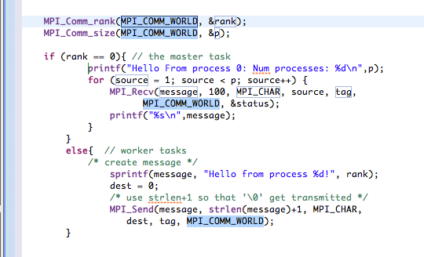

To ease with common patterns of MPI programming, code templates are provided for a small number of patterns. More can be easily added.
This allows quick entry of common patterns in MPI programming.
For example, for MPI send-receive,
mpisr and hit Ctrl-space

Type over any of the included sample variable names, and all occurrences of that name within the template code will be changed accordingly.
One other pattern is also included. Type mpiif and hit Ctrl-space
to see initialize and finalize API calls.
To see the code templates, and add your own:
If you have ideas for more MPI (or other) templates, please consider contributing these to PTP! Send email to ptp-dev@eclipse.org (Developer mailing list).
See also UPC Code Templates.